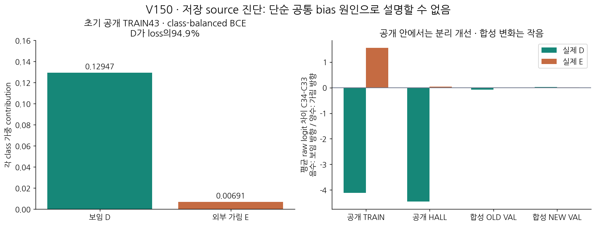

공개 동일 조립체 안에서는 D/E 분별이 개선됐지만 넓은 native 검증으로 이어지지 않았다. 공개 가림 종류와 역할의 범위가 좁고, 원 crop 밖의 scene 역할 보임도 같은 D 감독에 들어간다. 공통 bias만 막는 새 ranking fit보다 실제 팔레트 source의 역할·외부가림 범위를 확장하고 query 증거와 역할 상태를 분리할 근거를 확보한다.

초기 공개 loss는 D가94.9%를 차지하고, 공통 bias에 대한 D gradient 크기가 E의5.74배였습니다. 그러나 최종 공개 TRAIN에서는 D score가 평균−4.114, E score는+1.549로 갈라졌습니다. 따라서 실제 효과를 모든 점의 일괄 보임 이동으로 설명할 수 없습니다. 공개 안의 분별 개선과 다른 source로의 일반화 미개선을 구분해야 합니다.
| 자료 | D 평균 logit 변화 | E 평균 logit 변화 |
|---|---|---|
| 공개 TRAIN | -4.113939 | +1.548952 |
| 공개 HALL | -4.448661 | +0.034692 |
| 합성 OLD VAL | -0.072672 | -0.009518 |
| 합성 NEW VAL | +0.022683 | +0.015373 |
512행 중 의미가 정해진 것은 D70/E14입니다. E14 모두 동일 목재 통합 조립체의 native3 하부를 종이상자가 가린 사례입니다. TRAIN43은 native2-D19, native3-D16, native3-E8이며, upper/rear는 U로 남아 있습니다. 이 자료가 다양한 자연 외부 가림을 대표하지는 않습니다.
아래는 원 공개 프레임17입니다. 자홍 q3는 바닥으로 빗나갔고 원96 crop도 대부분 바닥입니다. 청록 R3는 제공 pose의 제한적 하부 역할 참조이며, 그 역할 자체는 보입니다. 기존 D 라벨은 이 장면의 역할 보임 판정이므로 원 q 픽셀의 대상 존재와 같은 정답으로 해석할 수 없습니다. 라벨을 E로 바꾸거나 이 행을 버리지 않았습니다.

TRAIN D35 중 참조가 원 full96 밖인 행2개, central32 밖인 행19개가 있습니다. 이 거리는 virtual AABB 참조의 locality 진단이며 정확한 physical GT 오차가 아닙니다. 초기 rank margin1 위반4개는 모두 다른 far-floor D67 하나에 집중돼 있습니다.
실제 flat Euro pallet mesh·제공 K/pose·instance별 full/visible mask가 있는 MR6D 공개 source를 확인했습니다. 이 파일들은 native8 D/E가 자동으로 정답이라는 뜻은 아닙니다. 최소 원본 묶음을 고정 선택해 형상·축·객체 대응·외부/자기 가림의 주석 정의부터 검토합니다. 공식 validation/test를 학습에 쓰면 우리 source 개발 자료로 취급하며 MR6D blind benchmark 성능을 주장하지 않습니다.
새 학습·모델·현재223 재평가·PnP·좌표 보정은 없습니다. 전체 목표는 미해결이며 모델 채택도 없습니다.